About Us
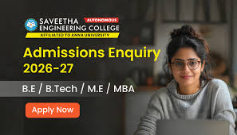
Saveetha Engineering College, located in Thandalam, Chennai, is a well-known institution dedicated to providing quality technical education. Established in 2001, the college has grown into a reputed center for engineering studies with modern infrastructure and experienced faculty members. The campus offers a vibrant learning environment that supports academic excellence, research, innovation, and overall personality development. The institution focuses on shaping students into responsible professionals with strong technical knowledge and ethical values. With advanced laboratories, digital classrooms, library facilities, and placement support, the college prepares students to meet industry standards and global challenges.
Departments
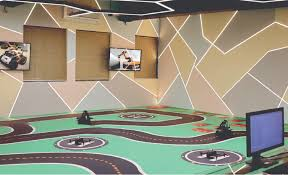
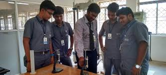
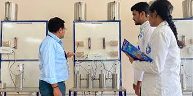
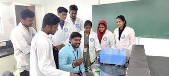
Saveetha Engineering College offers undergraduate and postgraduate programs in various engineering disciplines. The major departments include Computer Science and Engineering, Artificial Intelligence and Data Science, Information Technology, Electronics and Communication Engineering, Electrical and Electronics Engineering, Mechanical Engineering, Civil Engineering, Biomedical Engineering, Agricultural Engineering, and Medical Electronics. Each department is supported by qualified faculty members and well-equipped laboratories that help students gain both theoretical understanding and practical experience. The curriculum is designed to meet industry requirements and encourage innovation, research, and project development among students. The departments at Saveetha Engineering College focus not only on academics but also on innovation, research, and industry collaboration. Each department encourages students to participate in technical competitions, hackathons, and international conferences to develop problem-solving and leadership skills. Specialized labs, simulation centers, and maker spaces give students hands-on experience with modern technologies. The college also promotes interdisciplinary learning, allowing students from different departments to collaborate on projects in areas such as robotics, AI, IoT, renewable energy, and biomedical engineering. Faculty mentorship ensures students are guided in selecting research topics, publishing papers, and pursuing higher studies.
Admissions
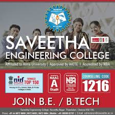
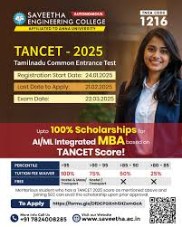
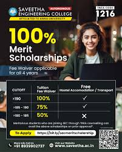
Admissions at Saveetha Engineering College are conducted based on merit and counseling procedures such as TNEA. Students seeking admission must have completed their higher secondary education with Physics, Chemistry, and Mathematics as core subjects. The admission process involves applying through the official website, attending counseling sessions, submitting required documents, and completing the fee payment process. The college ensures a transparent and student-friendly admission system to guide students smoothly through each stage. Saveetha Engineering College provides multiple pathways for admission to ensure talented students from across the country can join the institution. Apart from TNEA counseling, students can apply through management quota, lateral entry programs, and scholarships for meritorious or economically disadvantaged candidates. The college organizes orientation programs for new students to help them understand course requirements, campus facilities, and academic expectations. Regular webinars, open houses, and virtual tours allow students and parents to make informed decisions about admissions. Career guidance sessions also help students choose specializations aligned with industry trends and personal interests.
Placement
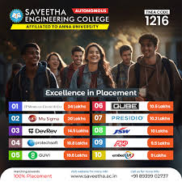
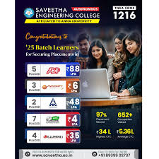
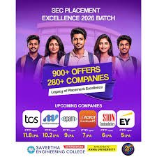
The college has a dedicated Training and Placement Cell that focuses on preparing students for career opportunities in leading companies. Regular training programs, aptitude classes, communication skill development sessions, and mock interviews are conducted to improve employability skills. Many reputed companies visit the campus every year for recruitment drives. Top recruiters include Tata Consultancy Services, Infosys, Wipro, IBM, and Accenture. The placement cell works continuously to maintain strong industry connections and provide students with excellent career opportunities. Placements at Saveetha Engineering College are supported by long-term industry partnerships, internship programs, and entrepreneurship initiatives. The placement cell works to build soft skills, technical expertise, and leadership qualities among students. Many students have successfully secured internships at top IT firms, research organizations, and startups even before graduation. The college also promotes entrepreneurial skills, helping students launch their own startups through incubation support, mentorship, and networking opportunities. Alumni engagement programs connect current students with past graduates to share insights, industry knowledge, and career guidance, further strengthening the placement ecosystem. With dedicated attention to both technical and interpersonal skills, students are prepared for global career opportunities in engineering, IT, research, and innovation.
Lifestyle
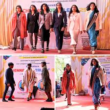
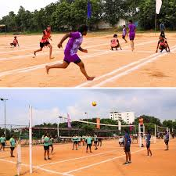
Campus life at Saveetha Engineering College is lively and engaging, with modern infrastructure, smart classrooms, advanced laboratories, and spacious open areas. Students enjoy a peaceful and green campus that creates a positive learning environment. The college organizes symposiums, workshops, seminars, and cultural festivals throughout the year, giving students opportunities to explore their talents and interests. Interaction with faculty members and peers helps students grow academically and socially. STUDENT ACTIVITIES Students at Saveetha Engineering College actively participate in clubs and extracurricular activities such as coding clubs, robotics teams, cultural dance groups, music bands, and photography clubs. These activities help students relax from academic stress while learning new skills. Annual cultural events and technical fests bring students together and create memorable experiences. Students also take part in community service programs and awareness campaigns that build social responsibility. SPORTS AND FITNESS The college encourages students to maintain physical fitness through sports facilities such as cricket grounds, basketball courts, indoor games, and gym facilities. Regular sports events and competitions help students stay active and healthy. Participation in sports teaches discipline, teamwork, and confidence. Yoga and fitness sessions are also conducted to promote a healthy lifestyle among students.
Hostel
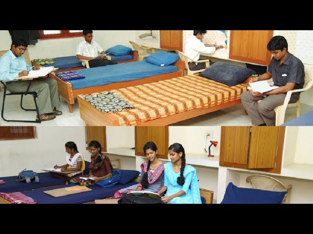
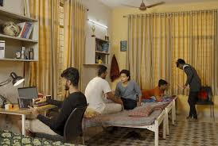
Saveetha Engineering College provides comfortable and secure hostel facilities for students who come from different cities and states. The hostels are designed to create a home-like environment where students can focus on their studies while enjoying a safe and friendly atmosphere. Separate hostel blocks are available for boys and girls with proper security systems and wardens who ensure discipline and student safety. The hostel mess at Saveetha Engineering College offers hygienic and nutritious food prepared under proper supervision. Both vegetarian and non-vegetarian meals are provided with a balanced menu that supports student health. Clean dining halls and regular quality checks make sure students enjoy healthy and tasty meals every day. Special menus are also arranged during festivals to make hostel life more enjoyable.